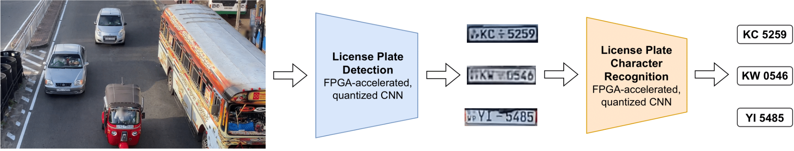
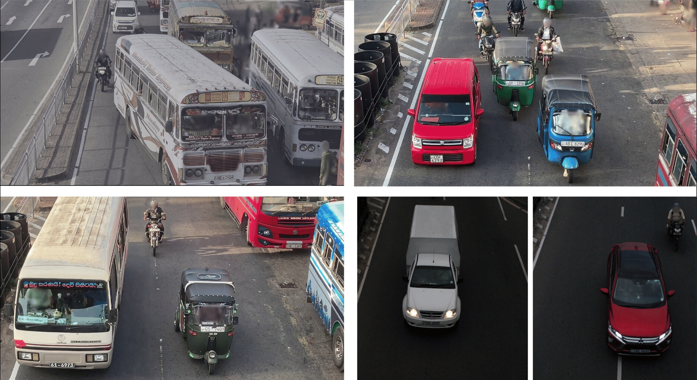
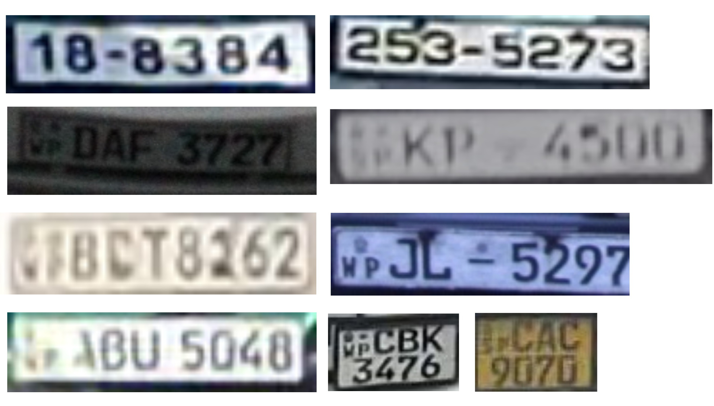
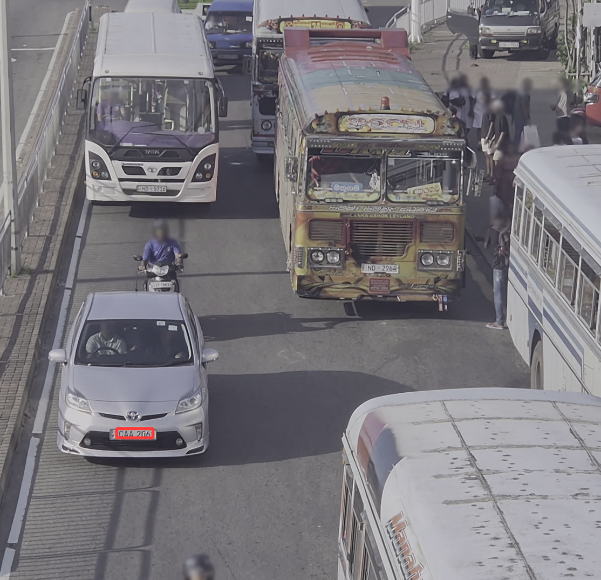

本文面向发展中国家复杂、非结构化、多车型交通场景，构建了一个由轻量化车牌检测 CNN、轻量化字符识别 CNN、SL-LPR 数据集、Brevitas 低比特量化与 FINN FPGA 部署组成的端侧实时车牌识别系统，在 Xilinx Kria KV260 上实现 11.5 FPS，LPD 达到 93.6% AP，LPCR 达到 87.88% 车牌级准确率，证据见 PAGE 1、PAGE 6、PAGE 7、PAGE 8。
车牌识别（License Plate Recognition, LPR）是智能交通系统中的基础感知能力，服务于测速执法、道路规则执法、交通监测和拥堵收费等应用。论文从一开始就把问题限定在“发展中国家的复杂交通场景”中，而不是经典停车场、收费站或单车入口场景。这个限定很重要：它把研究目标从“识别一辆正对摄像头的汽车车牌”转为“在低成本端侧设备上，处理多车、多车道、无清晰车道分隔、多车型混杂的道路图像”，见 PAGE 1。
已有 LPR 系统大体沿着两条路线发展。第一类是传统图像处理与硬件加速路线，例如形态学操作、连通域分析、AdaBoost，以及 FPGA 或 DSP 部署。这类方法在停车场入口等受控环境中较容易实现实时性，但对复杂背景、多个车辆、文本干扰和车牌尺度变化的适应性有限，论文在 PAGE 1 和 PAGE 2 对此作了归纳。第二类是深度学习路线，常见做法是用 YOLO 系列目标检测器定位车牌，再用 OCR 或字符识别网络读出号码。这类方法对复杂场景更鲁棒，但模型计算量通常较大，嵌入式实时部署困难。
论文指出，Jetson 等嵌入式 GPU 可以运行较大的网络，但功耗通常高于 10 W，并且大规模部署成本较高，见 PAGE 2。相对地，FPGA 适合低比特、固定结构、可流水并行的网络推理，但要让完整 LPR 管线在 FPGA 上运行，需要模型结构、量化方式、后处理、资源利用率和吞吐都同时成立。这也是本文的工程核心：不是单独提出一个更大的检测器或识别器，而是在模型设计阶段就以 FINN/Brevitas 可部署性为约束。
复杂交通场景还带来数据层面的障碍。论文比较了 CCPD、PKU、UFPR-ALPR、AOLP 与 SL-LPR 等公开数据集，指出许多数据集要么以停放汽车为主，要么每张图只有 1 至 2 辆车，要么唯一车辆数量有限，难以覆盖斯里兰卡道路上的摩托车、公交车、卡车、三轮车和拥挤多车道画面，见 PAGE 2 与 PAGE 3 的 Table I。也就是说，模型结构轻量化只是问题的一半，另一半是训练集必须反映真实部署场景。
本文的出发点可以概括为三个同时成立的约束：第一，输入是多车辆大图，而不是裁好的单车图；第二，目标平台是低功耗嵌入式 FPGA，而不是服务器 GPU；第三，系统不仅要给出单模型指标，还要给出端到端相机接入、检测、裁剪、识别、后处理后的帧率和延迟。PAGE 1 明确给出三项贡献：两个总参数量约 1.4M 的轻量 CNN、SL-LPR 数据集、以及 Kria KV260 上 11.5 FPS 和 87 ms 最大单帧延迟的完整系统。
一个典型车牌识别系统可以拆成两个子任务：车牌检测（License Plate Detection, LPD）和车牌字符识别（License Plate Character Recognition, LPCR）。LPD 的输入是整幅道路图像，输出是车牌边界框；LPCR 的输入是裁剪后的车牌图像，输出是字符序列。本文采用的也是这个分解式管线：先在多车道图像中检测车牌，再裁剪每个候选车牌，最后对每个车牌单独识别字符，见 PAGE 2 的方法概述与 PAGE 3 的 Fig. 1。
端侧实时性不是简单地把单模型推理时间压低。对于一帧包含多个车牌的图像，总时间由一次 LPD、多次 LPCR、图像缩放、相机采集、NMS、裁剪和其他中间步骤共同决定。论文在 PAGE 7 的 Table VII 中给出“含 10 个车牌的一帧”的延迟：LPD 每帧 9.9 ms，LPCR 每个车牌 4.0 ms，帧缩放 18.1 ms，相机采集 6.0 ms，其他中间步骤 10.0 ms，最终总时间报告为 87.0 ms。
评价指标也分为两类。检测侧使用召回率和平均精度（Average Precision, AP），并将正确预测定义为边界框交并比满足 $\mathrm{IoU}\ge 0.5$，见 PAGE 6。识别侧则报告字符级准确率和车牌级准确率：前者衡量单个字符是否识别正确，后者要求整块车牌的字符序列完全正确。论文在 PAGE 6 和 PAGE 7 报告 SL-LPR 上字符级准确率为 97.42%，车牌级准确率为 87.88%。
PAGE 2 的 Section III 和 PAGE 3 的 Fig. 1 给出了系统结构：输入为多车道道路图像；检测模型在整图上输出车牌框；系统根据检测框裁剪车牌区域；字符识别模型对裁剪图像输出字符；两个 CNN 均以低比特量化形式实现，并部署到 FPGA 中。处理系统（Processing System, PS）负责相机输入、图像缩放、输出后处理、NMS 和裁剪等非神经网络步骤；FPGA fabric 负责两个模型的加速推理，见 PAGE 5 的 Fig. 7。

从工程角度看，本文不是“单模型榜单论文”，而是一篇端侧系统论文。它的关键判断是：在多车复杂场景中，直接采用大规模 YOLO 或通用 OCR 虽然可能带来更高单点精度，但会给嵌入式实时性和低成本部署带来压力；相反，把检测器和识别器都限制在轻量、低比特、可 FPGA 编译的结构内，再通过数据集和任务定制补足鲁棒性，更符合目标场景。
flowchart TB
IMG[Road image
1920x1080 capture] --> RSZ[Resize for LPD
576x576]
RSZ --> LPD[Quantized LPYOLO
LP detection]
LPD --> NMS[NMS and bbox expansion]
NMS --> CROP[Crop license plates]
CROP --> LPCR[Quantized LPCR CNN
Character recognition]
LPCR --> OUT[Plate string and confidence]
subgraph FPGA[FPGA fabric]
LPD
LPCR
end
subgraph PS[Processing system]
RSZ
NMS
CROP
OUT
end
上图是对 PAGE 2、PAGE 5、PAGE 7 所述管线的结构化整理。Mermaid 图中没有引入论文之外的新模块，只把论文文字描述中的处理步骤重新排列为数据流。需要注意的是，PAGE 7 表明当前系统瓶颈并不在两个 CNN 推理本身，而在处理系统上的高分辨率图像缩放步骤；这意味着未来优化空间更多在系统级流水化、多线程缩放或硬件化预处理，而非只追求模型压缩。
本文第一项基础贡献是 SL-LPR 数据集。论文认为现有公开数据集不足以代表发展中国家道路场景：CCPD 虽然规模很大，但全部是停放汽车；PKU 和 AOLP 每张图大多只有 1 至 2 辆车，车型也偏单一；UFPR-ALPR 有更多车型，但唯一车辆数量只有 150，可能限制训练泛化，见 PAGE 2 和 PAGE 3 的 Table I。
| 数据集 | 国家/地区 | LPD 图像数 | LPCR 图像数 | 平均每图车牌数 | 最大每图车牌数 | 场景特点 |
|---|---|---|---|---|---|---|
| CCPD | 中国 | 290k | 290k | 1.0 | 1 | 仅汽车，停放场景 |
| PKU | 中国 | 3924 | 4294 | 1.1 | 2 | 汽车和卡车，道路场景 |
| UFPR-ALPR | 巴西 | 4500 | 4500 | 1.0 | 1 | 15 类以上车型，道路场景 |
| AOLP | 台湾 | 2049 | 2066 | 1.0 | 2 | 仅汽车，道路场景 |
| SL-LPR | 斯里兰卡 | 2970 | 3412 | 1.9 | 8 | 5 类以上车型，道路场景 |
这张表来自 PAGE 3 的 Table I。其关键不是 SL-LPR 在图像数上最大，而是它在“复杂交通”维度上更贴近目标应用：平均每图 1.9 个车牌，最多 8 个车牌，包含汽车、摩托车、公交车、卡车和三轮车，并具有较高车牌位置与尺寸变化。换言之，SL-LPR 牺牲了绝对规模，换取了场景分布与部署目标的一致性。
采集方案同样围绕真实道路部署设置。论文在 PAGE 3 的 Table II 给出相机参数：10 FPS、1920×1080 分辨率、1/1200 s 快门、最大车辆速度 250 km/h、覆盖道路区域宽 6 m 长 12 m。可以用公式化方式表示该采集设定：
$$\text{Capture setting} = 1920 \times 1080,\quad f=10\ \mathrm{FPS},\quad t_{\mathrm{shutter}}=\frac{1}{1200}\ \mathrm{s}$$
这组参数的含义是：分辨率由道路宽度和远处车牌可读性共同决定；帧率和快门速度则为高速车辆至少出现在两个无明显运动模糊的帧中服务，证据见 PAGE 3。论文没有给出更细的光学计算公式，因此这里不推导像素尺寸与车牌物理尺寸的关系。

对于检测任务，作者在过滤近重复样本后得到 2970 张带边界框标注的图像，并按 80:18:2 划分训练、验证和测试，同时额外加入 100 张不同日期采集的图像到测试集，见 PAGE 3。对于字符识别任务，作者用检测框裁出车牌图像，并进行人工字符标注，因为通用 OCR 库只能正确识别 19% 的车牌，见 PAGE 3。这个事实直接支持了本文不直接使用通用 OCR 的选择。

检测模型基于 LPYOLO，这是一种低精度 YOLO 风格架构，原本用于 FPGA 上的人脸检测。本文将其改造为车牌检测模型，原因是标准 YOLO 类模型虽然精度好，但计算量可达约 10 亿浮点操作量级，不符合实时嵌入式部署目标；而 LPYOLO 简化后计算量为 0.363 billion operations，并且权重与中间输出均量化为 4 bit，见 PAGE 3 和 PAGE 4。

输入尺寸是检测器设计的第一处任务定制。原 LPYOLO 使用 416×416 输入，本文改为 576×576，因为多车道远处小车牌在较小输入尺寸下可能不可检测。作者也说明 640×640 是 YOLO 中常见选择，但 576×576 已获得足够精度，继续增大分辨率会引入不必要延迟，见 PAGE 3 和 PAGE 4。这一选择体现了端侧系统设计中的典型折中：输入越大，小目标越容易检测，但预处理、卷积计算和内存传输也更昂贵。
输出结构可由 PAGE 4 的描述精确写为：
$$\text{LPD output tensor}=18\times18\times18$$
人话解释：模型把输入图像划分为 18×18 个网格，每个网格针对 3 个 anchor boxes 进行预测；每个预测包含中心坐标、宽高、类别信息和置信度，因此最终输出通道数为 18。论文没有给出独立编号公式，但 PAGE 4 明确给出“18×18 grid cells”“3 different anchor boxes”和“18×18×18 output size”。
第二处任务定制是 anchor boxes。LPYOLO 原 anchor 来自通用目标数据集，尺寸和纵横比与车牌差异明显，因此会降低边界框预测准确性。本文在多车道车牌标签上进行 K-means 聚类，重新得到 3 个 anchor，使其纵横比接近车牌，并覆盖小、中、大三种多车道图像中的车牌尺度，见 PAGE 4。这里的贡献不是新发明聚类 anchor，而是把一个通用低精度检测架构重新校准到车牌这一窄域目标上。
第三处任务定制是最终激活函数的硬件友好实现。原 LPYOLO 在训练时使用 sigmoid，在推理时用 piecewise tanh / HardTanh 替代，以避免昂贵计算。本文发现，车牌较小，HardTanh 替代带来的像素误差会显著损害 AP，因此改为先将值限制在 $[-3.5,3.5]$，再做 8-bit 量化，最后查表应用 sigmoid。PAGE 4 明确写出选择 3.5 的理由：
$$\sigma(3.5)=0.97\simeq1$$
人话解释：当输入已经接近饱和区间时，sigmoid 输出接近 1；把范围限制到 3.5 既能减少饱和值误差，又能让 8-bit 查表实现只需要预计算 256 个 sigmoid 值，证据见 PAGE 4。
| 最终层激活 | 相对 sigmoid 的最大像素误差 | AP [IoU ≥ 0.5] | 解读 |
|---|---|---|---|
| Unquantized sigmoid | Baseline | 94% | 精度上限参考，但硬件计算更贵 |
| HardTanh | 15 | 52% | 替代误差对小车牌定位影响严重 |
| 8-bit quantization → sigmoid | 3 | 93.6% | 接近 sigmoid 精度，同时适合查表实现 |
这张表对应 PAGE 4 的 Table III。最有信息量的不是 93.6% 本身，而是 HardTanh 从 94% 降至 52% 的断崖式下降。它说明在小目标检测中，最终层坐标映射的近似误差不能简单照搬人脸检测场景；相同的硬件优化，在不同视觉任务中可能有完全不同的误差敏感性。
训练策略也服务于收敛和泛化。作者先在 PKU 数据集上预训练，再在 SL-LPR 上微调；训练中使用平移、水平翻转、缩放和 HSV 变化等数据增强，使模型学习不同尺寸、位置和环境中的车牌，见 PAGE 4 和 PAGE 6。PAGE 6 的 Fig. 9 进一步显示，仅用 PKU 训练的模型会漏检摩托车和公交车等外观差异较大的车辆，而在 SL-LPR 微调后能检测多车型车牌，并避免把公交车上其他文字误检为车牌。
字符识别模型来自 fast-plate-ocr 的 CNN 架构，但本文进行了结构改造，使其更适合 FPGA 部署。PAGE 4 和 PAGE 5 说明，作者将原模型中的并行全连接层替换为卷积层，使用普通卷积替代 strided convolution，移除前几个 1×1 卷积层，仅保留一个 1024 filters 的层，并通过剪枝进一步减少模型大小。
LPCR 输入尺寸设置为 64×128，且为灰度单通道图像，原因是 Brevitas 要求尺寸能被 pooling stride 整除，见 PAGE 5。输出通道数由车牌格式长度和每个位置可能出现的字符集合决定；较短车牌用空格 padding。每个通道经 global max pooling 和 softmax 后得到对应字符预测，见 PAGE 5。论文没有提供字符集合的完整列表，因此不应推断具体类别数含义。
模型压缩效果可用 PAGE 5 的 Table IV 表达：
$$\text{Parameter reduction}=1-\frac{1.02\ \mathrm{M}}{11.47\ \mathrm{M}}\approx91.1\%$$
人话解释：相对于量化后的原 fast-plate-ocr，剪枝后的本文 LPCR 参数从 11.47M 降到 1.02M，约减少 91%，与论文“model size has been reduced by 91%”一致，证据见 PAGE 5。
| 模型 | 参数量 | 乘法数 | 准确率 | 解读 |
|---|---|---|---|---|
| Original fast-plate-ocr | 11.47 M | 527 M | 89.70% | 精度最高，但不利于低资源 FPGA 共同部署 |
| Simplified | 4.25 M | 258 M | 88.48% | 结构简化带来明显压缩，精度下降 1.22 个百分点 |
| After pruning | 1.02 M | 132 M | 87.88% | 参数量大幅下降，精度较原始模型下降 1.82 个百分点 |
这组消融结果说明本文接受了小幅识别精度损失，换取模型规模和运算量的大幅下降。对于端侧多车牌场景，这种交换并非简单“牺牲精度”，因为 LPCR 需要对每个检测到的车牌重复运行。如果一帧有 10 个车牌，LPCR 延迟会按车牌数累积，模型大小和单次推理时间直接影响端到端吞吐。
量化策略不是统一 bit-width，而是分层设置。PAGE 5 说明，作者使用 Brevitas 对所有层的权重和激活进行量化：前 3 层权重使用 4 bit，后续 7 层使用 2 bit，最终层使用 1 bit；除最后层外激活使用 4 bit，最后层训练时使用 8 bit 量化以改善学习，推理时使用 4 bit。这一策略体现了经验性选择：靠近输入的低层特征对细节更敏感，因此保留较高 bit-width；后层可以更激进压缩。
可以将 LPCR 推理精度与误差分布概括为：
$$\mathrm{Acc}_{\mathrm{char}}=97.42\%,\qquad \mathrm{Acc}_{\mathrm{plate}}=87.88\%$$
人话解释：单个字符大多正确，但整块车牌要求所有字符同时正确，因此车牌级准确率显著低于字符级准确率，证据见 PAGE 6 和 PAGE 7。PAGE 7 进一步解释，SL-LPR 中更多不清晰车牌导致 plate-level accuracy 较低，而错误通常来自少数字符。
论文还引入了低光增强。作者先计算平均像素强度，再做强度变换，以增强暗图像对比度，同时尽量不影响亮图像；并使用随机旋转、模糊和亮度变化等增强，使模型对光照和姿态变化更鲁棒，见 PAGE 5 的 Fig. 6。由于当前提供的 figures 列表不包含 Fig. 6 的 html_path，本文不插入该图，只在文字中引用其页码证据。
本文的硬件实现依赖 Brevitas 与 FINN 的组合。Brevitas 用于训练可量化模型并导出 FINN-ONNX；FINN 将模型图转换为硬件可实现的模块；Vivado 创建包含模型 IP 和 Zynq Ultrascale+ PS 的 block design；Vitis 编写 C 程序驱动模型输入输出，并实现缩放、后处理、NMS、裁剪等中间步骤，见 PAGE 5 的 Fig. 7。
这一路线的核心优势在于把量化从“部署后压缩”前移为“训练时约束”。如果模型在训练阶段就以低比特权重和激活学习，硬件部署时不需要再冒险进行事后量化。PAGE 5 明确指出，训练好的 Brevitas 模型可以被 FINN 用于 FPGA 推理加速；FINN 过程中会进行网络变换、RTL/HLS 模块生成、按配置指定并行度、创建模块 IP 并拼接完整 IP。
资源约束是本文系统实现的关键边界。因为检测器和识别器是两个独立加速器，并且要同时放入同一块 FPGA，作者优化 FINN 编译配置并减少参数存储，在资源约束内提高并行化参数以最大化吞吐。最终 FPGA 资源利用率为 LUT 63%、FF 38%、BRAM 99%、DSP 29%，见 PAGE 6。BRAM 99% 是一个很强的信号：该系统主要受片上存储资源约束，而不是 DSP 算力完全耗尽。
端到端吞吐可由 PAGE 7 和 PAGE 8 的延迟报告写为：
$$T_{\mathrm{frame}}(10\ \mathrm{plates})=87.0\ \mathrm{ms}$$
人话解释：在一帧包含最多 10 个车牌的情况下，完整处理时间为 87.0 ms，包含 FPGA 上的 LPD 和 LPCR，也包含 PS 上的图像缩放、相机采集与中间步骤，证据见 PAGE 7 的 Table VII。
进一步可得论文报告的帧率关系：
$$\mathrm{FPS}\approx\frac{1000}{87.0}=11.49\approx11.5$$
人话解释：87 ms 每帧对应约 11.5 FPS，这与论文 PAGE 1 摘要和 PAGE 8 结论中给出的 11.5 FPS 一致。这里使用毫秒到秒的单位换算，不引入论文之外的实验结果。
PAGE 6 给出了检测实验设置。LPD 模型先在 PKU 数据集预训练 300 epochs，再在评估数据集上微调最多 700 epochs；学习率在 50 epochs 内升至 0.0035，然后衰减至 0.0015。评价指标为 recall rate 与 AP，正确检测定义为 $\mathrm{IoU}\ge0.5$。
在 SL-LPR 上，LPD 模型达到 93.6% AP 和 92.2% recall，见 PAGE 6。这里的 92.2% recall 低于其在 PKU、UFPR-ALPR、AOLP 上的表现，作者将原因归于 SL-LPR 中小车牌比例更高、每图车辆数更多。这个解释与数据集构造是自洽的：SL-LPR 本来就是为了多车道、远距离、多目标道路场景而设计。
| 方法 | PKU recall | UFPR-ALPR recall | AOLP recall | SL-LPR recall | 延迟 |
|---|---|---|---|---|---|
| Yuan et al. | 97.7 | — | — | — | 36 ms [CPU] |
| Laroca et al. | — | 98.3 | — | — | 4 ms [GPU] |
| Hsu et al. | — | — | 94.0 | — | 90 ms [CPU] |
| Xie et al. | 97.4 | — | 99.5 | — | 530 ms [CPU] |
| Khan et al. | 99.6 | — | 99.4 | — | 570 ms [N/A] |
| Ours | 98.6 | 96.7 | 99.5 | 92.2 | 10 ms [FPGA] |
这张表对应 PAGE 6 的 Table V。本文方法在 PKU、UFPR-ALPR、AOLP 上与已有方法竞争力较强；但更重要的是，它的 10 ms FPGA 延迟接近或优于多数 CPU 方法。与 Laroca et al. 的 4 ms GPU 结果相比，本文不是最快的单项检测，但它的目标是低功耗、低成本、端侧 FPGA 组合系统；因此应把精度、延迟和功耗放在一起评价，而不是只比较单表延迟。
PAGE 6 的 Fig. 8 展示了复杂交通图像上的预测框。作者承认远处较小车牌可能漏检，部分远处车牌预测框相对真值略有偏移，可能裁掉一个字符。系统层面的处理方式是在送入 LPCR 前将边界框扩大 5%。这个设计体现了检测与识别之间的误差传递意识：LPD 的轻微框偏差会直接影响 LPCR 输入质量，因此裁剪策略需要给字符识别保留边缘冗余。
PAGE 6 和 PAGE 7 报告，LPCR 模型训练 700 epochs，初始学习率 0.001；如果 loss 连续 30 epochs 无改善，则学习率衰减 15%。在 SL-LPR 上，字符级准确率为 97.42%，车牌级准确率为 87.88%。由于车牌级准确率要求整串字符全部正确，即使单字符错误率较低，也会在整牌指标上被放大。
| 方法 | PKU | AOLP | Arg-plate | SL-LPR | 延迟 |
|---|---|---|---|---|---|
| Li et al. | 99.5 | — | — | — | 50 ms [FPGA] |
| Zhang et al. | 88.2 | 95.8 | — | — | 25 ms [GPU] |
| Hsu et al. | — | 91.2 | — | — | 90 ms [CPU] |
| fast-plate-ocr | — | — | 94.1 | 90.0 | 13 ms [CPU] |
| Ours | 94.2 | 96.2 | 95.3 | 87.9 | 4 ms [FPGA] |
这张表对应 PAGE 7 的 Table VI。本文 LPCR 在 PKU 和 AOLP 上超过若干先前方法，在 Arg-plate 上也略高于 fast-plate-ocr；但在 SL-LPR 上低于 fast-plate-ocr 的 90.0%，论文将其归因于 SL-LPR 中更不清晰的车牌图像。与 Li et al. 的 transformer-based FPGA 方法相比，本文准确率较低，但每个车牌 4 ms，比 50 ms 约快 12 倍，PAGE 7 明确指出这对繁忙多车场景更实用。
从部署角度看，LPCR 的 4 ms per plate 是关键数据。如果一帧只有一个车牌，LPCR 不是主要瓶颈；但一帧包含 10 个车牌时，LPCR 总时间约为 40 ms。本文选择 CNN 而非 transformer，选择剪枝量化而非大模型 OCR，正是为了控制多目标场景中的累积延迟。
PAGE 7 的 Fig. 10 和 Fig. 11 展示了识别效果和检测加识别的组合效果。作者指出，模型可以识别不同类型和条件下的斯里兰卡车牌，并能忽略车牌开头较小的两个字符；当车牌部分遮挡时，模型可能出现单字符错误，但低置信度可用于将对应字符替换为空格，避免应用记录错误车牌号。由于当前 figures 列表没有提供 Fig. 10 和 Fig. 11 的 html_path，本文仅文字引用，不插入不存在的图像路径。
PAGE 7 的硬件实验是本文最有说服力的部分。作者不仅报告模型精度，还验证硬件实现过程中的精度保持，包括仿真和最终 FPGA 部署，并集成相机进行实时现场测试。完整系统功耗为 4.2 W，低于论文在 PAGE 2 提到的嵌入式 GPU 通常超过 10 W 的功耗区间。
| 功能 | 本文系统 Kria KV260 | 服务器 CPU | 嵌入式 CPU | 解读 |
|---|---|---|---|---|
| LPD 每帧 | 9.9 ms [FPGA] | 9.1 ms | 128.2 ms | FPGA 接近服务器 CPU，远快于嵌入式 CPU |
| LPCR 每车牌 | 4.0 ms [FPGA] | 4.7 ms | 39.5 ms | FPGA 在识别侧略快于服务器 CPU |
| Frame resizing | 18.1 ms [PS] | 9.7 ms | 18.1 ms | 当前系统瓶颈之一，尚未硬件加速 |
| Camera acquisition | 6.0 ms [PS] | 6.0 ms | 6.0 ms | 相机采集固定开销 |
| Other steps | 10.0 ms [PS] | 4.5 ms | 10.0 ms | NMS、裁剪、后处理等仍在 PS 上 |
| 10 车牌总时间 | 87.0 ms | 76.3 ms | 557.3 ms | 端侧 FPGA 达到实时，嵌入式 CPU 不满足 |
这张表对应 PAGE 7 的 Table VII。最值得分析的是，本文系统的总延迟 87.0 ms 比服务器 CPU 的 76.3 ms 慢，但远快于嵌入式 CPU 的 557.3 ms。也就是说，本文不是证明 FPGA 能全面超过服务器，而是证明在低功耗嵌入式平台上，可以获得接近服务器 CPU 的核心模型推理性能，并使完整系统满足 10 FPS 摄像头的实时要求。
论文还指出，当前 frame resizing 是瓶颈，因为输入为高分辨率图像且缩放在 PS 上完成，见 PAGE 7 和 PAGE 8。这给未来优化留下明确方向：如果将缩放多线程化、NEON 优化或硬件化，系统吞吐可能进一步提升。相反，单纯继续压缩 LPD 或 LPCR 未必能显著提高端到端 FPS，因为模型推理已不是唯一主导项。
论文摘要和 PAGE 1 声称 SL-LPR dataset is available for research use at github.com/sl-lpr-uom/SL-LPR。任务元信息也给出 code_url 为 https://github.com/sl-lpr-uom/SL-LPR。然而，依据当前提供的论文全文和元信息，无法确认该仓库是否包含训练代码、Brevitas 模型定义、FINN 配置、Vitis C 程序、Vivado block design 或 FPGA bitstream。因此，代码分析部分必须结论为：本文未提供可确认的公开代码实现。
这会影响论文方法复现的粒度。读者可以从论文中复现高层方法：LPYOLO 改为 576×576 输入、K-means 重新计算 3 个车牌 anchor、最终 sigmoid 查表替代 HardTanh、fast-plate-ocr 结构简化与剪枝、Brevitas 分层 bit-width 量化、FINN 编译到 Kria KV260。但无法依据当前材料逐行对应源码函数、配置文件和硬件工程脚本。因此，本文不伪造源码路径，不提供虚构代码段。
本文最适合的应用边界是：固定或半固定道路摄像头、可接受约 10 FPS 的交通监控场景、需要低功耗低成本端侧部署、目标车辆速度和摄像头参数接近 PAGE 3 Table II 的设置、车牌类型和道路环境与 SL-LPR 分布相近。对于停车场入口这类简单单车场景，本文系统可能显得复杂；对于超高帧率高速公路、多摄像头融合或夜间强眩光场景，论文证据还不足。
方法学上，本文提供了一个很清晰的端侧视觉系统范式：先用任务定制数据集解决场景分布问题，再用轻量网络解决计算问题，再用量化训练和 FPGA 编译解决部署问题，最后用端到端延迟表证明系统闭环。它的价值不只在车牌识别，也可迁移到其他“小目标检测 + 小区域识别 + 嵌入式部署”的任务，例如集装箱号识别、仪表读数、道路标识识别或工业文本检测。
不过，这种范式也有代价。FPGA 部署通常需要更复杂的工程链路：Brevitas、FINN、Vivado、Vitis、DMA、PS/PL 数据交换、资源约束、bit-width 选择和并行度配置都可能影响最终性能。论文在 PAGE 5 和 PAGE 6 给出流程和资源利用率，但没有展开配置搜索过程，也没有报告不同并行度、BRAM 压力或 PS/PL 数据搬运的消融。因此读者不能从论文中完整判断硬件设计空间是否已接近最优。
作者自述的局限主要在未来工作段落中体现。PAGE 8 明确提出，SL-LPR 数据集未来需要扩展到夜间图像和更多地点，以确保所有环境下的准确检测。这说明当前数据集虽然覆盖白天和低光黄昏条件，仍不足以代表完整全天候部署场景。对于实际执法系统，夜间、雨天、逆光、强反光、污损车牌和遮挡都可能显著影响检测与识别。
第二个作者已间接承认的局限是处理系统瓶颈。PAGE 7 和 PAGE 8 指出 frame resizing 当前在 PS 上执行，是系统瓶颈，其影响可以通过多线程实现降低。这意味着当前 11.5 FPS 不是完全由 FPGA 模型加速能力决定，而是受未加速预处理链路约束。若摄像头分辨率提高、道路覆盖区域扩大，缩放和内存带宽压力可能更明显。
独立判断的第一点局限是，SL-LPR 的地域性很强。它覆盖斯里兰卡道路、车型、车牌格式和交通行为，对中国、美国、欧洲、非洲其他国家或不同车牌制式的泛化没有充分证据。论文在 PKU、AOLP、Arg-plate 等数据集上给出部分跨数据集指标，说明模型有一定适应性；但训练、字符集合、号码格式和检测场景仍可能需要重新定制。
独立判断的第二点局限是，LPCR 车牌级准确率仍有提升空间。PAGE 6 和 PAGE 7 报告 SL-LPR 上 plate-level accuracy 为 87.88%，这意味着约 12% 的车牌完整字符串会出错。论文通过低置信度字符替换为空格来避免错误记录，但这会把一部分错误转换为不完整结果。对于执法或收费等高风险应用，仍需要多帧融合、置信度校准、规则校验或人工复核机制。
独立判断的第三点局限是，论文没有提供端到端业务指标，例如多帧跟踪后车辆级识别率、误报车牌对系统告警的影响、在持续视频流中的重复识别合并策略、不同车速下的真实召回率等。PAGE 8 说明系统可配合 10 FPS 摄像头处理最高 250 km/h 车辆，但论文证据主要来自帧级模型指标和现场观察，而不是完整交通业务闭环评估。
本文的核心贡献在于把复杂道路场景 LPR 与低功耗嵌入式 FPGA 部署放在同一个问题中处理。通过 SL-LPR 数据集、轻量 LPD 与 LPCR 模型、任务定制 anchor、sigmoid 查表式最终层、分层低比特量化、FINN 编译和 Kria KV260 集成，论文证明了一个完整系统可以在 4.2 W 功耗下达到 11.5 FPS，并在 SL-LPR 上取得 93.6% LPD AP 与 87.88% LPCR 车牌级准确率，证据见 PAGE 1、PAGE 6、PAGE 7、PAGE 8。
从研究价值看，论文并没有提出复杂的新网络结构，而是展示了如何围绕部署目标重构整个感知链路。它的启示是：在端侧视觉系统中，真正决定可用性的往往不是某个单点模型是否最大、最新，而是数据分布、模型结构、量化策略、硬件资源和预后处理延迟能否共同闭合。
PAGE 1：论文摘要给出任务定义、复杂发展中国家交通场景、两阶段 LPD/LPCR 方法、轻量 CNN、SL-LPR 数据集、93.6% mAP、87.88% accuracy、Brevitas、FINN、Kria KV260、11.5 FPS、GitHub 数据集链接；Introduction 给出应用背景、非结构化交通、多车型、小车辆、低成本低功耗端侧部署的动机，以及三项贡献。
PAGE 2：Related Work 比较 Jetson GPU、FPGA/DSP 传统方法、CPU 嵌入式方法、复杂多车场景方法和已有数据集局限；Methodology 开始处说明 Fig. 1 系统流程：检测、裁剪、识别、量化 CNN、FPGA 部署。
PAGE 3：Fig. 1 系统总览；Table I 比较 CCPD、PKU、UFPR-ALPR、AOLP、SL-LPR；Table II 给出相机参数 10 FPS、1920×1080、1/1200 s、250 km/h、6 m × 12 m；Fig. 2 展示多车道数据；数据集划分、人工标注和通用 OCR 仅 19% 正确率。
PAGE 4：Fig. 3 车牌裁剪样本；Fig. 4 LPD 架构；LPYOLO 改造、576×576 输入、18×18×18 输出、3 个 anchor、K-means anchor 重估、HardTanh 问题、8-bit quantization → sigmoid 查表、$\sigma(3.5)=0.97\simeq1$；Table III 给出 HardTanh 与量化 sigmoid 的 AP 差异。
PAGE 5：Fig. 5 LPCR 架构；fast-plate-ocr 改造、卷积替代并行全连接、普通卷积替代 strided convolution、移除部分 1×1 层、剪枝；Table IV 给出参数量、乘法数和准确率；Brevitas 分层 bit-width；Fig. 6 低光强度变换；Fig. 7 FPGA 实现流程。
PAGE 6：FPGA 资源利用率 LUT 63%、FF 38%、BRAM 99%、DSP 29%；Results 设置；LPD 训练 epochs、学习率、IoU≥0.5；SL-LPR 上 93.6% AP 和 92.2% recall；Table V LPD 对比；Fig. 8 预测框与真值框；Fig. 9 PKU 训练与 SL-LPR 微调对比。
PAGE 7：LPCR 训练设置；SL-LPR 字符级准确率 97.42%、车牌级准确率 87.88%；Table VI LPCR 对比；Li et al. transformer 方法准确率更高但每车牌约慢 12×；Fig. 10、Fig. 11 识别与组合结果描述；总模型 1.4M 参数、量化后 268 KB；硬件准确率保持、相机集成现场测试、功耗 4.2 W；Table VII 系统延迟。
PAGE 8：Table VII 延续解释：frame resizing 是当前瓶颈，系统可在 87 ms 内处理含 10 个车牌的一帧，达到 11.5 FPS，适配 10 FPS 摄像头和最高 250 km/h；Conclusion 总结低功耗 FPGA 相比 GPU 的成本功耗优势；Future Work 提出扩展夜间图像和更多地点，并与测速、交通分析等应用集成。